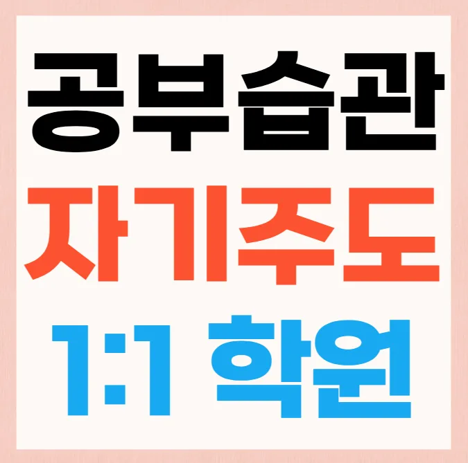

첫 번째로 김포북변동 초5 영어학원의 교육 철학을 확인해요. 두 번째로 강사의 경력과 전문성을 살펴봐요. 세 번째로 수업 방식이 학생 주도형인지 확인하고요. 네 번째로 김포북변동 초5 영어학원 내 학습 환경과 시설을 직접 눈으로 확인해요. 다섯 번째로 주변 학부모들의 후기와 입소문을 조사해요. 마지막으로 비용 대비 효과를 비교해 최종 선택을 해요. 또 한 번은 체험 수업에 참여해 실제 수업 흐름을 체감하고요. 김포북변동 초5 영어학원 운영 시간과 휴일 정책이 가정 일정과 맞는지도 체크해요. 교재와 학습 자료가 최신 교육 과정과 연계돼 있는지도 확인해요. 등록 전 상담 시 질문 리스트를 미리 준비해 효율적인 상담을 진행해요.
김포북변동은 아파트와 단독 주택이 조화를 이루는 주거 환경을 가지고 있어요. 주변에 공원과 도서관이 밀집해 학습 분위기가 활기차게 형성돼요. 학군이 우수한 초중고등학교와 인접해 학부모들의 교육 열기가 높아요. 다양한 사설 김포북변동 초5 영어학원가가 거리마다 자리 잡아 선택 폭이 넓어져요. 대중교통이 편리해 통학 시간 단축이 가능하고 학습 효율을 높여요. 지역 커뮤니티 활동이 활발해 정보 공유가 빠르게 이루어져요. 학생들은 방과 후에도 안전한 환경에서 스터디 모임을 진행해요. 김포북변동 초5 영어학원 방문 시 주변 카페에서 휴식 공간을 활용하면 편리해요. 이러한 특성을 고려해 맞춤형 학습 전략을 설계하면 효과가 배가돼요. 마지막으로 부모님과 자녀가 함께 목표를 설정하고 지속적으로 점검해요.
이 김포북변동 초5 영어학원은 개념 이해 후 즉시 짧은 확인 과제를 통해 학습 정착도를 높이는 방식을 채택해요. 주요 대상은 영어 기초를 다지고 싶은 초등 학생과 심화 학습을 원하는 중학생이며, 커리큘럼은 단계별 난이도 조절과 감정 연결 학습을 강조해요. 수강료는 초등영어 210,600원, 중등영어 253,800원으로 책정돼 있어 가성비가 뛰어나요. 특히 확률통계 연결 문제를 실제 상황에 적용해 보는 활동이 특징이에요
| 학원명 | 와와학습코칭학원 |
| 수강료 | 초등영어 210,600원 | 중등영어 253,800원 |
CURRICULUM
학생 주도 복습 발표 수업에서는 아이가 직접 문제를 선택하고 해결 과정을 설명하도록 해요. 이를 통해 사고 흐름을 스스로 정리하고 발표 능력을 동시에 키울 수 있어요. 정리노트 샘플을 제공하고, 작성법 코칭을 통해 효율적인 정리 습관을 길러줘요. 지수함수 개념을 실제 생활 예시와 연결해 이해도를 높이고, 단계별 난이도 조절로 학습 부담을 최소화해요. 전체 커리큘럼은 기본 개념 심화 문제 실전 적용 순으로 구성돼 있어요.
학생들이 김포북변동 초5 영어학원 선택 단계에서 흔히 저지르는 실수는 강사의 경력만 보고 깊이 있는 커리큘럼을 간과하는 경우예요. 실제로 강사 경력이 오래돼도 교육 방식이 일방적이면 학습 효과가 떨어질 수 있기 때문에, 수업 체험을 통해 직접 확인하는 것이 중요해요. 등록 후에는 목표 설정 없이 무작정 수업에 참여하는 경우가 많아요. 이때는 구체적인 학습 계획을 세우고, 주기적인 피드백을 요청해야 효과를 극대화할 수 있어요. 학습 관리 단계에서는 복습을 소홀히 하거나 진도에만 집중해 기본 개념을 놓치는 실수가 나타나요. 따라서 매주 정해진 복습 시간을 확보하고, 핵심 개념을 지속적으로 점검하는 루틴을 만드는 것이 필요해요. 이런 방식을 통해 학습 효율을 높이고, 장기적인 성장을 이끌어낼 수 있어요.
와와김포북변동 초5 영어학원은 무리하게 학생을 바꾸지 않아요. 대신 과제 수행 방식에 개입해 전략을 재조정함으로써 앎이 표현으로 이어지는 사고형 학습 시스템을 구축하는 데 집중해요. 예를 들어 교과서 지문 속 시제 변화 문제를 직접 출제하여 시간의 흐름에 따른 글의 뉘앙스 차이를 읽어내도록 훈련시키죠. 또한 복습 항목을 요일별로 배치하여 잊어버리기 쉬운 내용을 주기적으로 되새길 수 있도록 학습 관리를 해줘요. 이러한 전략적인 접근은 학생이 자신의 학습 방식을 점차 개선해 나갈 수 있도록 돕는 중요한 역할을 해요.
학습 태도가 성실하지만 시험 전 긴장감이 높은 중학교 1학년 학생에게 특히 효과적이에요. 시간 안배가 어려운 경우에도 맞춤형 플랜으로 일정 조절을 지원하고, 불안 관리 프로그램을 통해 시험 스트레스를 감소시켜요. 김포북변동에 거주하는 가정이라면 통학 거리와 시간 절약도 큰 장점이 될 거예요
선생님께서 제가 자주 틀리는 유형을 집중적으로 짚어 주시면서 구체적인 개선 방법을 제시해 주셨어요. 그 덕분에 실전에서 같은 실수를 반복하지 않게 되었고, 점수가 눈에 띄게 올라갔어요. 처음에는 낯선 분위기가 조금 두려웠지만, 따뜻한 인사와 작은 격려가 큰 힘이 되었어요. 수업 시간에 소규모 그룹 토론을 통해 친구들과 생각을 나누면서 새로운 관점을 배울 수 있었던 점도 큰 장점이에요. 시험 전 개인 맞춤형 오답 정리집을 받아서 복습할 때 큰 도움이 되었고, 덕분에 자신감도 크게 상승했어요.

| 학원명 | 와와학습코칭학원 |
| 등록번호 | 제3918호 |